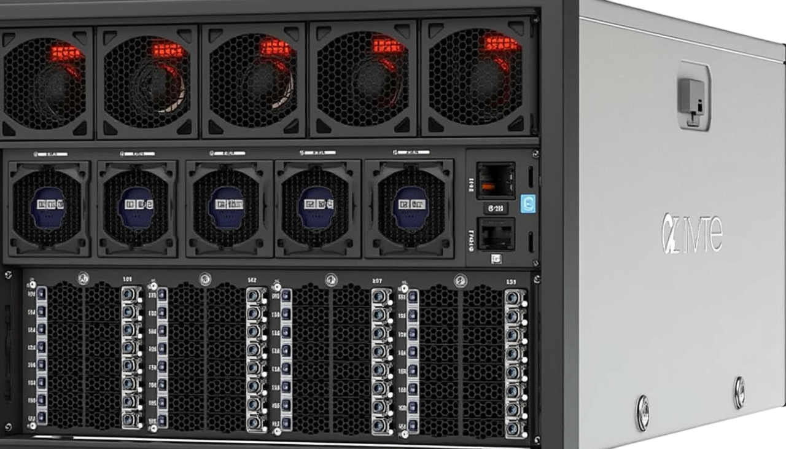
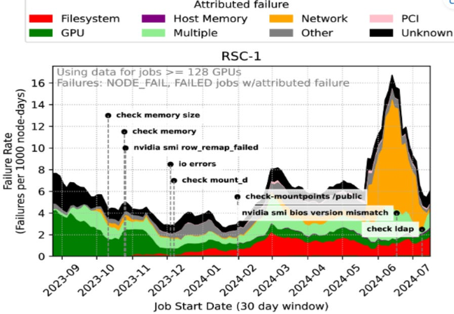
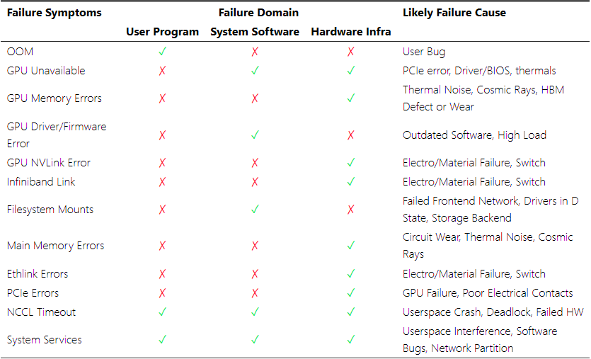
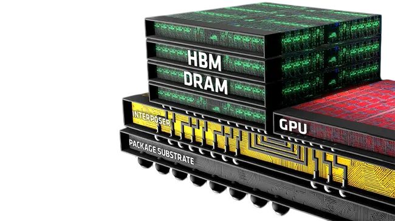
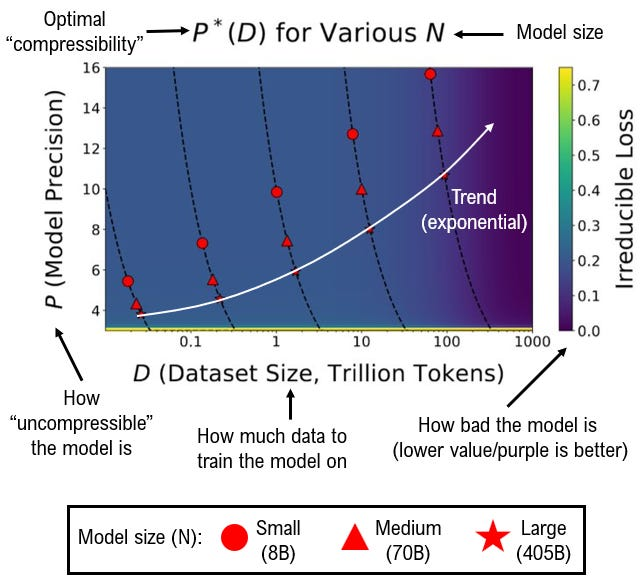
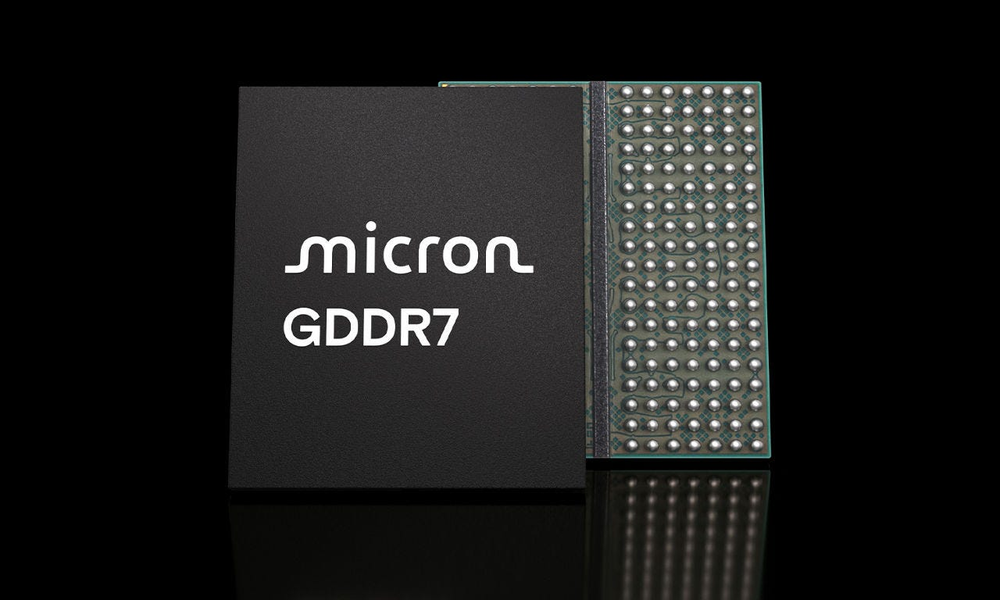
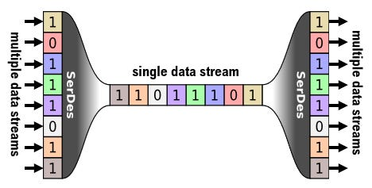
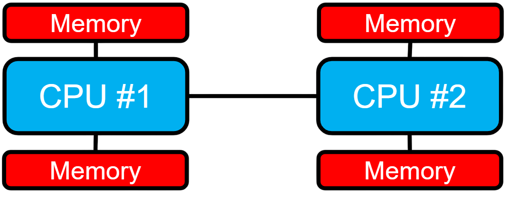
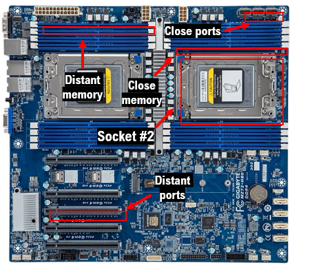

Server or switch? How many ports is too many?
This month's updates:
One-pagers:
Meta once again demonstrates leadership in tech with a commitment to open-sourcing their analyses by revisiting their previous work on datacentre reliability, this time focusing on AI workloads and GPU clusters. A lot of these findings might already be well known in industry, some are quite surprising.
The report focuses on two of Meta's largest R&D compute clusters known as RSC-1 (focused on LLM training) and RSC-2 (vision model training and other HPC jobs), at 16K and 8K GPUs respectively. Both clusters use InfiniBand for the backend network and have similar network topologies, as well as having the same multiple storage offerings available to users. The paper discusses various methods and experiments and their results in detail.

Source: Meta
Key observations:

Source: Meta
SK-Hynix, a leading memory manufacturer, has been asked to accelerate its development and release of HBM4 - the next generation of its memory devices that modern datacentre GPUs rely on for performance - by six months. With HBM3's roadmap not yet complete, will SK-Hynix be able to deliver?
High-bandwidth memory (HBM) is a key component in all widely deployed AI accelerators currently. Nvidia, AMD, and Intel devices all use HBM to provide their GPUs with enough data to keep utilisation and performance high as regular DDR DRAM or even GDDR just can't provide the bandwidth to support AI workloads.
SK-Hynix, one of the 3 companies in the world able to produce HBM at scale and currently the market leader, plans to release the 4th generation of this technology in 1H2026. However, with Nvidia wanting to release their next generation of AI GPUs, the Rubin series, in 2H2025, this release would be too late for them to properly qualify and integrate HBM4 instead of HBM3E.

Source: AMD
HBM3E is currently in its second iteration with the 12-layer version ready to ship in 4Q2024 and the 16-layer version being ready to sample in 1Q2025. With Nvidia's push for HBM4 before 2026 it's become clear that they intend to use SK-Hynix's 12-layer HBM4, which reportedly reaches bandwidths of up to 1.5-2TB/s (JEDEC standard = 1.6TB/s) with a capacity of up to 64GB per stack. This is a significant improvement from even 16-layer HBM3E (1.5TB/s and 48GB). Regardless, this still aligns with rumours of the Rubin R100 GPU's on-chip memory capacity of 576GB.
It's unclear yet whether any of this affects SK-Hynix's current plans to release HBM5 in 2028-2030. It should also be noted that Samsung currently claims to be releasing their HBM4 in 2H2025 also.
As AI (Apple intelligence) scales to more devices, more capabilities, and faster responses, the volume of servers required to support these inferencing workloads will scale with it. For this, Apple appears to consider building their own datacentre servers for the first time.
According to reports, Apple has approached Foxconn in Taiwan to manufacture dedicated AI servers likely based on Apple's own M4-series processors. These servers will primarily handle AI inferencing workloads to power Apple Intelligence services across their range of products. The design and implementation of such servers differs from cloud providers like Microsoft and Amazon, as Apple's servers would likely not require intensive power delivery or cooling solutions typical of generally less power efficient and training-focused hardware.
This presents significant challenges for Apple as the company has limited experience in designing and manufacturing such products compared to established players. While focusing on inference workloads might simplify some aspects of the design, the market is still showing unprecedented demand for AI server manufacturing capacity, which could impact Apple's ability to scale production quickly. The company will need to navigate numerous technical validation issues and manufacturing constraints as it takes on this challenge.
In addition, Foxconn is possibly already at capacity with their commitments to Nvidia on building a new facility in Mexico that will reportedly produce 20,000 servers a month for Nvidia's GB200 NVL72 SKU. Given this ongoing scaling of infrastructure, it's unclear how Foxconn will generate additional capacity for M4 based servers. As a result, Apple has also approached Lenovo as well as other OEMs outside of China to ensure supply chain diversification.
Perhaps the most important paper in AI this year, a study by a collection of American academics shows that we are approaching the limits of how much more we can keep quantising or "compressing" AI models. Naturally, this does pose some risk to the growth of future hardware sales.

Efficiently inferencing very large AI models relies on quantising - or "compressing" – their weights. This results in being able to fit the model into fewer AI accelerators and hence improve inferencing speed and efficiency. In other words, quantisation allows models to be economically viable – making them suitable for a profitable service to users.
However recent research from academia shows evidence that as models become larger and more data is used to train them, the degree that they can be quantised to has its limits. And those limits are very close to current capabilities. In other words, training a larger model on more data will make it more difficult to quantise.
The study presented is the first reliable evidence in the field that there are such limits to AI model scaling, and how those limits can be quantified. For AI training labs these results may lead to reconsiderations on how much larger their next generation of models will be based on their available data volumes and compute capacities. Consequently, this will affect how much hardware they buy and use to train such models in the near future.
Announced at SC24, the El Capitan supercomputer achieves 1st place in the top500 supercomputer rankings. Reaching a peak of 1.742 ExaFLOPS (10^18) on the HPL benchmark, the AMD-powered and HPE-built machine shows significantly more compute capability than its competition.
Lawrence Livermore national labs (LLNL) is one of just 11 U.S. public labs to receive more than $1 billion in funding annually and primarily conducts R&D for the department of energy on national security matters. LNLL strategically invests a large amount of that funding into their HPC clusters annually, cumulating in El Capitan, now the most powerful (by FLOPS) supercomputer holding the top spot in the top500 rankings. The are multiple lists that use various criteria to compare different machines but the primary rankings that the largest machines compete in is by their LINPACK score, which measures how many computations the system can perform towards solving a very large generic matrix algebra problem.
Source: LLNL
Some of the key features/stats of El Capitan:
GDDR7 - the 7th generation of Graphics DDR memory - is now under development. Suited for processors that need large capacity and bandwidth, GDDR7 RAM will continue the competition against HBM.

Source: Micron
Source: Samsung
Graphics DDR memory was originally developed for gaming and video workloads where regular DDR memory couldn't provide enough bandwidth to saturate the compute engines of graphics cards well enough. GDDR overcomes this issue by delivering a wide bus width (amount of data that can be transferred at once) at the cost of power and latency. With the explosion in the diversity and utilisation of AI accelerators, GDDR memory has been chosen by some manufacturers as the device memory that strikes the optimal balance between latency, power, and bandwidth.
With DDR (double data rate) memory, transfers can be initiated twice per clock cycle, however DDR7 is referred to technically as QDR (Quad data rate) as it will further double this transfer frequency. Due to being made with a 10 or 12nm process, 7th gen DDR should be significantly higher density then GDDR5 and 6. This will allow for larger capacities - 16-24GBs - as well as significantly higher bandwidths - 32-40Gb/s - per individual bank.
Devices currently expected to use GDDR7 will be primarily gaming GPUs such as Nvidia's upcoming Blackwell-based RTX 50 series, as well as RDNA4 based AMD GPUs. However, many AI hardware organisations are already using GDDR5/6 and LPDDR5 in their devices. Based on how HBM availability looks in the coming months, it's possible that GDDR7 will see use in AI accelerators developed in 2025/6 onwards.
A serialiser/deserialiser (SERDES), is a chip that converts digital signals to and from multiple parallel streams and single serial streams. These components are fundamental to modern high-speed data transmission, allowing a complex machine with many communication streams to use relatively few cables/links.
SERDES implementations appear in many parts of the hardware stack, handling data movement at multiple levels of the system hierarchy. Within servers, SERDES circuits enable PCIe links between CPUs and other system components such as memory devices. Between servers, SERDES devices are part of the interface between electrical and optical signals, enabling high-bandwidth networks over fibre. In essence, they convert data to and from serial and parallel streams. This enables multiple independent data streams to be sent coherently over the same link, optimising the use of the link by keeping it saturated instead of it being idle.

Source: Wikipedia
SERDES technology has evolved rapidly to meet increasing bandwidth demands, with each generation roughly doubling data rates and improving power efficiency. Early implementations operated at 56 Gbps, while current state-of-the-art designs achieve 112 Gbps per lane. The latest 224G SERDES implementations are now emerging in 5nm processes, being driven by the market's push for 800G/1.6T optical transceivers. These varied designs of SERDES circuits support differing reach requirements from very short reach VSR at 0.1m to long reach LR, extending beyond 0.5m. At the limits of SERDES reach and speed, maintaining the quality of the signal becomes difficult or even impossible, and improving signal interpretability at these limits is a very active field of research.
448G SERDES technologies are already in development, though such high speeds present significant signal integrity challenges and will likely require advanced materials and design techniques to maintain viable signal quality across even short-reach interconnects.
For a given socket in a modern CPU, some parts of memory will be closer than others, affecting the memory access latency. Non-uniform memory access (NUMA) architectures have emerged to optimise performance by organizing memory accesses based on physical location, becoming vital in modern multi-socket systems.
The Intel Cascade lake 6482 dual-socket 40 core CPU (20 cores per socket) is a great study for this, where doing core-core latency benchmarks reveal that when accessing registers from another core on the same socket, the latency is ~50ns, but when doing the same on a core from the other socket, the latency incurred is ~150ns. In practice, for most CPUs the latency increase is around 2-3x, significant for some HPC workloads where multiple small accesses incurring this overhead can cause a large drop in performance.

With NUMA architectures, both the hardware design and the operating system split the CPU into multiple NUMA "nodes", where core-core communication and the memory allocation is optimised such that processes pinned to certain cores will (if the workload is optimised) communicate more with processes pinned to nearby cores, and allocate memory needed by those processes to locations that are physically close.

This principle applies not only to communication and memory accesses, but also to everything else on the CPU that is asymmetrically distanced from the sockets, such as PCIe sockets, which connect the CPU to network interface cards, AI accelerators, and sometimes even storage. Some CPUs/systems are designed to optimise traffic here too, having PCIe-aware NUMA architectures, which can have even larger impacts on performance.